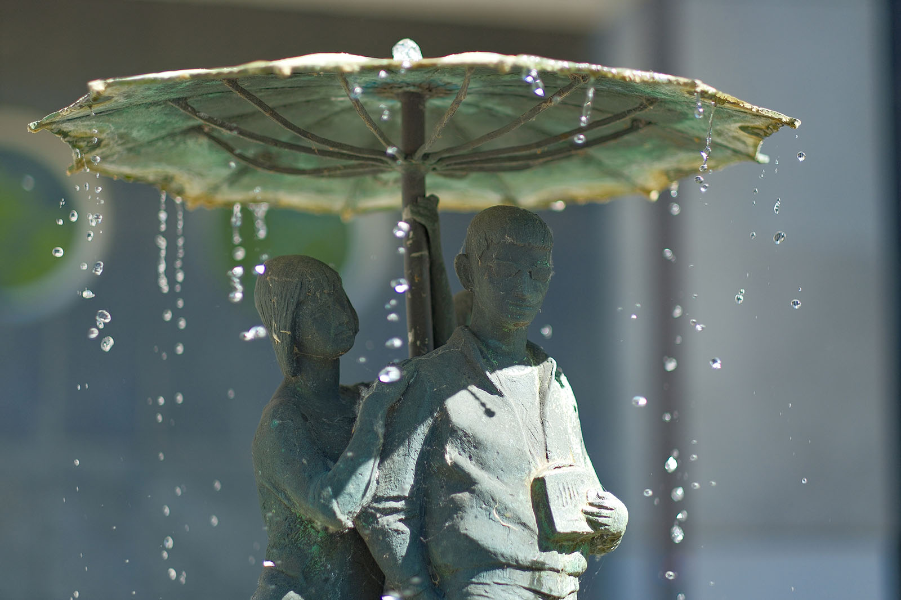
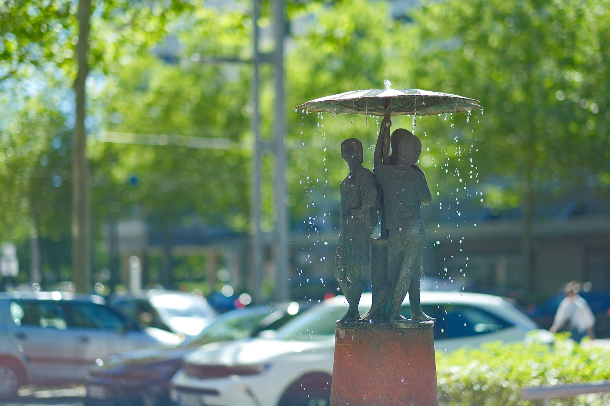
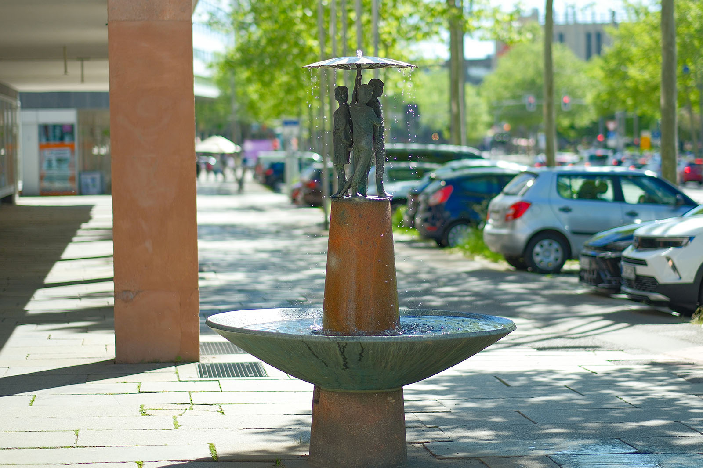
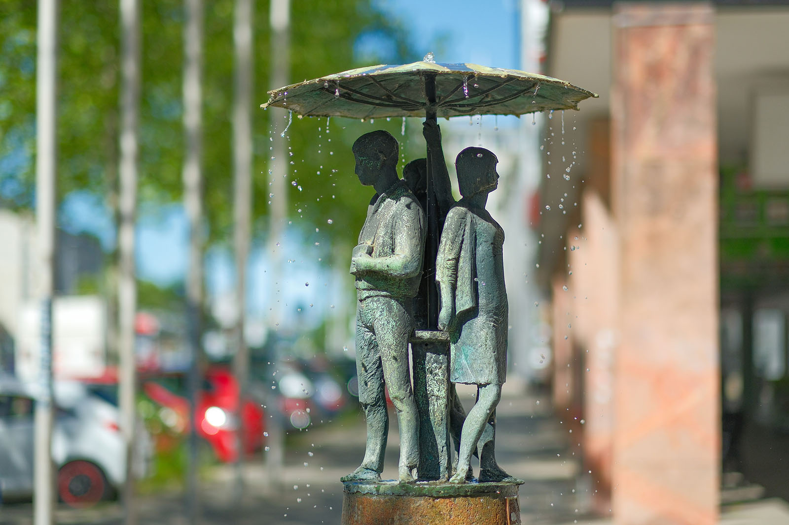

Recherche und Werkbeschreibung: Roman Pilz. Text und Fotografien wechseln sich wie in einem Magazin ab. Ein Klick auf ein Bild öffnet die Großansicht.
Johann Belz erhielt 1964 gemeinsam mit zwei anderen Künstlern den Auftrag, die wenige Zeit zuvor fertiggestellte Straße der Nationen mit einem Brunnen zu verschönern. Anlass war die große Feier zum Stadtjubiläum - 800 Jahre Chemnitz/Karl-Marx-Stadt von 1165 bis 1965.
Die drei Künstler scheinen sich abgestimmt zu haben – wie üblich bei größeren Projekten im öffentlichen Auftrag war auch individuelles künstlerisches Schaffen in kollektive Planung eingebettet – jeder der Künstler schuf ein Werk, das ein Lebensalter des Menschen repräsentiert: Kindheit, Jugend, Erwachsensein. Belz widmete sich den Heranwachsenden, ab den 1950ern in Deutschland auch gerne von Erwachsenen abwertend "Halbstarke" genannt.
Johann Belz (auch Johannes bzw. Hannes genannt) wurde 1925 in Kratzig (heute Kraśnik Koszaliński, Polen) geboren und verstarb 1976 in Karl-Marx-Stadt (Chemnitz). In seiner Heimat, im ehemals preußischen Pommern, arbeitete Belz als Landarbeiter, bevor er 1942 zum Kriegsdienst verpflichtet wurde.
Nach Kriegsverletzung und Gefangenschaft wurde er 1945 nach Klingenthal entlassen, wo er von 1946 bis 1951 als Holzschnitzer arbeitete. Danach war er bis 1953 als Werbemaler der SDAG Wismut tätig. Im Alter von 28 Jahren beginnt er von 1953 bis 1958 ein Studium der Bildhauerei bei Walter Arnold an der Hochschule für Bildende Künste Dresden.
Anschließend war er selbst von 1959 bis 1964 Lehrbeauftragter für Bildhauerei an der Fachschule für angewandte Kunst in Schneeberg. Ab 1959 ist er in Karl-Marx-Stadt ansässig, wo er ab 1964 als freiberuflicher Künstler arbeitet. Er unterhält sein Atelier auf dem Sonnenberg und tritt vor allem als Gestalter von öffentlichen Plastiken aus Metall in Erscheinung.
Bis Mitte der 1960er Jahre arbeitet er hauptsächlich figürlich. Die Arbeiten des berühmten Berliner Metallgestalters Fritz Kühn regen ihn Ende der 1960er Jahre auch zu abstrakten Kompositionen an. In den 1970er Jahren wird sein Werk mehrfach ausgezeichnet.
Im Alter von 51 Jahren wählte Johann Belz den Freitod. Sein letzter großer öffentlicher Auftrag, das Relief "Kampf und Sieg der revolutionären deutschen Arbeiterklasse" (heute aufgestellt an der Bahnhofsstraße, Ecke Brückenstraße), blieb unvollendet.
Beatmusik unterm Regenschirm
Die Brunnenplastik „Jugend“ (1965) von Johann Belz an der Straße der Nationen.
Es beeindruckt auch heute noch, dass Johannes Belz, der als 16-Jähriger zum Krieg verpflichtet wurde und dabei seine Gesundheit und seine "besten" Jahre verlor, diese erste nach dem Krieg geborene Generation Anfang der 1960er Jahre so wohlwollend und sympathisch ins Bild setzt. Eine große Sehnsucht nach Unbeschwertheit, Freiheit und Selbstfindung ist in seiner Plastik spürbar – vielleicht gerade weil sie ihm selbst verwehrt blieb.
Die Figurengruppe besteht aus einem jungen Mann und zwei jungen Frauen. Die drei stehen eng beieinander, um und unter einem großen Schirm. Obwohl das Wasserspiel des Brunnens Tropfen wie Regen über den Schirm laufen lässt, handelt es sich wohl nicht um einen Regenschirm. Eher sind da drei Strandgänger, vielleicht bei einem Besuch an der Ostsee und noch barfuß vom Spaziergang im Sand, von einem Schauer überrascht worden. Das Paar und die dritte Frau kennen sich vielleicht noch nicht einmal und stehen doch Rücken an Rücken um den fest im Zentrum mit einem kleinen Tischlein stehenden Schirm.
Die Anordnung vor dem Gebäude weist dem Mann eindeutig die Hauptrolle zu. Er steht frontal vor uns, mit dem Rücken zum Gebäudegiebel – er trägt die Requisiten, die für damalige Verhältnisse mindestens genauso erstrebenswert waren wie heute das neuste Mobiltelefon: ein tragbares Kofferradio, das große Ähnlichkeit mit dem Transistorradio Typ "Stern 1" des VEB Stern Radio Rochlitz hat.
Vertikale Rillen über dem Lautsprecher und ein großer runder Regler, auf dem die linke Hand des Jungen liegt. - Wohin blickt er? Wir wissen es nicht, sind seine Blicke doch, unwiderstehlich und voller "Coolness", von einer Sonnenbrille verdunkelt – aber seine ganze Haltung, die Rechte in seine enge Gesäßtasche geschoben, mit geöffneter Jacke, hochgestelltem Kragen und ausfallendem Schritt, sagt: Hier spielt die Musik!
Zu seiner rechten Schulter wirft sich konsequent ein Mädchen an ihn heran, lächelnd. Im Sommerkleid und mit modischen Frisuren sind die beiden Frauen selbstbewusst auf je eigene Weise. Die eine schnappt sich ihren Schwarm, die andere steht unabhängig mit der linken Hand in der Hüfte und hebt den Kopf voller Stolz und Neugier. Wird sich der Himmel bald lichten? Wann kommt die Sonne wieder und wir genießen und erobern die Welt? 1965 und die Aufbaujahre zuvor waren auch in Karl-Marx-Stadt eine besondere Zeit des Optimismus, die Ruinen des Krieges weichen schönen Neubauten und der wirtschaftliche wie kulturelle Aufschwung scheinen Hand in Hand zu gehen.

Die Plastik wurde von Belz in Bronze und Kupferblech gearbeitet, vor allem die filigranen Rippen, die den dünnen Schirmstoff tragen, sind schön gearbeitet. Die Figurengruppe thront auf einem kegelförmigen Sporn aus rotem Porphyrtuff. Sie bilden die Spitze des Steins, der auf halber Höhe eine große runde Wasserschale zugleich durchstößt und trägt. Wird im Sommer der Brunnen in Betrieb genommen, tropfen vom Schirm rundherum Tropfen und Wasserfäden in das Becken.
Belz stattete in einer Phase, als das Stadtzentrum der sozialistischen Stadt Chemnitz als Karl-Marx-Stadt neu errichtet und vervollständigt wurde, gleich mehrfach einen künstlerischen Beitrag zu besonders profilierten Bauprojekten. Sein Brunnen auf der Straße der Nationen erhält nur 500 Meter weiter stadtauswärts und wenige Jahre später ein abstraktes, mechanisch verspieltes Pendant – den beliebten "Klapperbrunnen"
am Omnibusbahnhof. Wohnhäuser auf der einen Seite der Brückenstraße zeigen ein frühes Bleirelief, das er zusammen mit anderen Künstlern schuf, am Hotelhochhaus des Stadthallenkomplexes ist eine kristalline, blütenartige Metallplastik von ihm aufgestellt und auf der anderen Seite der Brückenstraße, Ecke Bahnhofsstraße, steht sein letztes Werk, eine große Reliefplastik zur Geschichte der Arbeiterklasse.
Johann Belz (auch Johannes bzw. Hannes genannt) wurde 1925 in Kratzig (heute Kraśnik Koszaliński, Polen) geboren und verstarb 1976 in Karl-Marx-Stadt (Chemnitz). In seiner Heimat, im ehemals preußischen Pommern, arbeitete Belz als Landarbeiter, bevor er 1942 zum Kriegsdienst verpflichtet wurde.
Nach Kriegsverletzung und Gefangenschaft wurde er 1945 nach Klingenthal entlassen, wo er von 1946 bis 1951 als Holzschnitzer arbeitete. Danach war er bis 1953 als Werbemaler der SDAG Wismut tätig. Im Alter von 28 Jahren beginnt er von 1953 bis 1958 ein Studium der Bildhauerei bei Walter Arnold an der Hochschule für Bildende Künste Dresden.

Anschließend war er selbst von 1959 bis 1964 Lehrbeauftragter für Bildhauerei an der Fachschule für angewandte Kunst in Schneeberg. Ab 1959 ist er in Karl-Marx-Stadt ansässig, wo er ab 1964 als freiberuflicher Künstler arbeitet. Er unterhält sein Atelier auf dem Sonnenberg und tritt vor allem als Gestalter von öffentlichen Plastiken aus Metall in Erscheinung.
Bis Mitte der 1960er Jahre arbeitet er hauptsächlich figürlich. Die Arbeiten des berühmten Berliner Metallgestalters Fritz Kühn regen ihn Ende der 1960er Jahre auch zu abstrakten Kompositionen an. In den 1970er Jahren wird sein Werk mehrfach ausgezeichnet.
Im Alter von 51 Jahren wählte Johann Belz den Freitod. Sein letzter großer öffentlicher Auftrag, das Relief "Kampf und Sieg der revolutionären deutschen Arbeiterklasse" (heute aufgestellt an der Bahnhofsstraße, Ecke Brückenstraße), blieb unvollendet.

Beatmusik unterm Regenschirm
Die Brunnenplastik „Jugend“ (1965) von Johann Belz an der Straße der Nationen.
